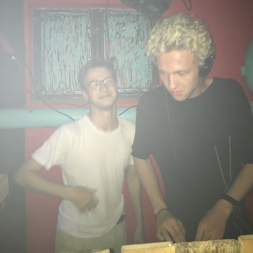
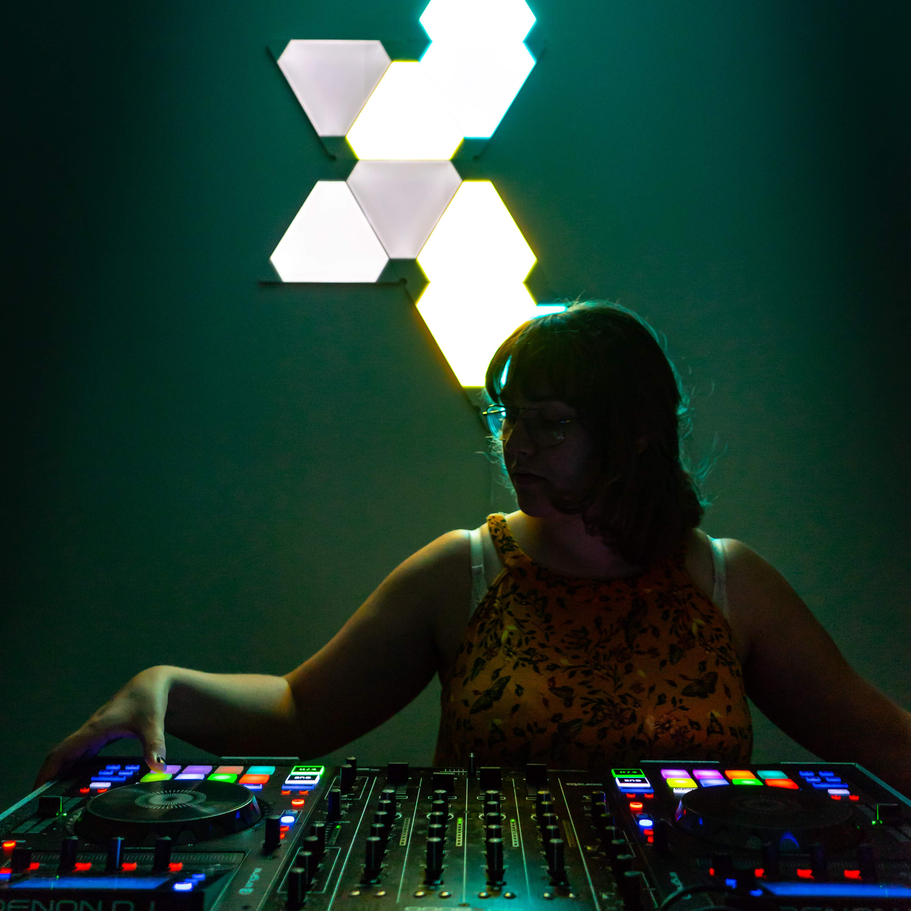

Human-Powered Public Art
- Project Underway
This art installation seeks to create magic through play. We seek to take a "playful" motion and generate electrical energy with it. This energy will power


I have DJed numerous private and public parties as well as raves in Germany and the US - everything reaching from small parties with 20 people, to bigger private and public parties with around 150 people, to public events with up to 300 people. You can find more about the specific events down below.
I love throwing events and creating joyful moments for and with others! Due to that reason, I have my own DJ equipment, speakers, and amplifier (DENON MCX800, ElectroVoice EKX-12p, Dynacord L2800FD).
Events Worth Mentioning
- 4h TechHouse DJ-Set at Massmann Bar in Munich, Germany (around 100 people) - Summer 2018
- Fashion Show Stage Music at the Weissmann Foundry (Babson C.,Olin C., Wellesley C.) (around 300 people)
- UV-Paint Art Installation Party at Olin College (around 50 people)
- Background and festive music during Olin College's President Rick Miller's farewell ceremony at Olin College(around 300 people) - February 2020